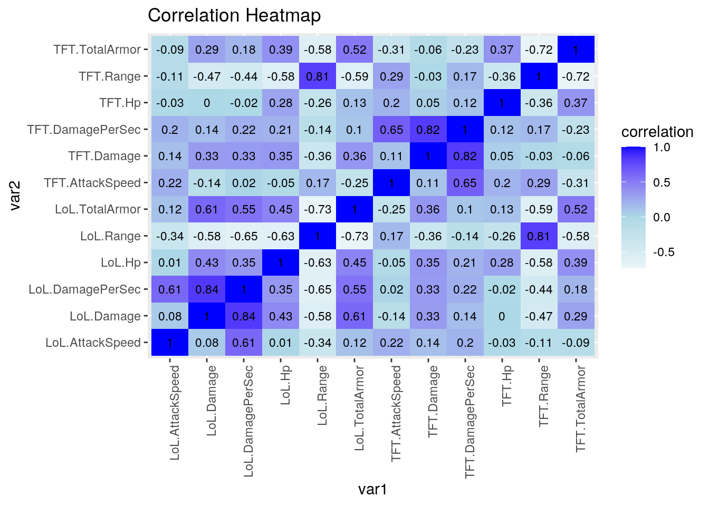
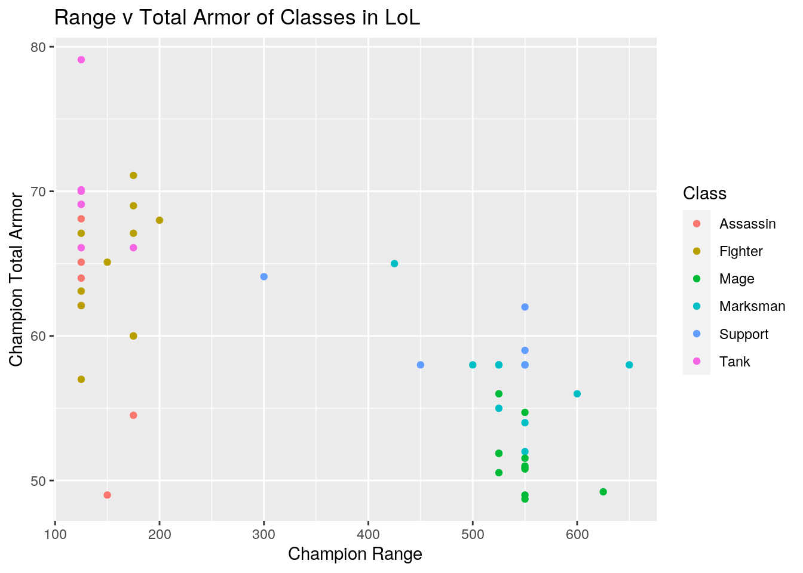
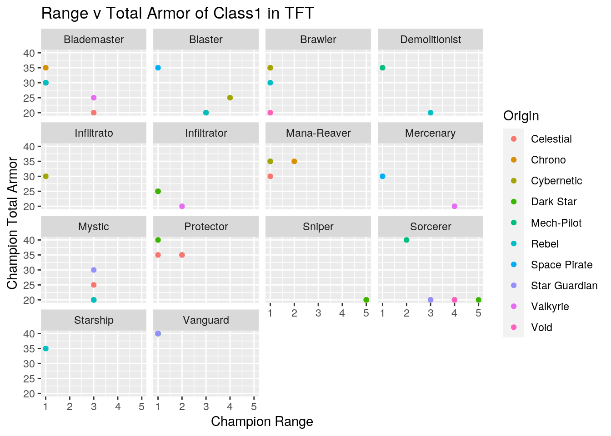
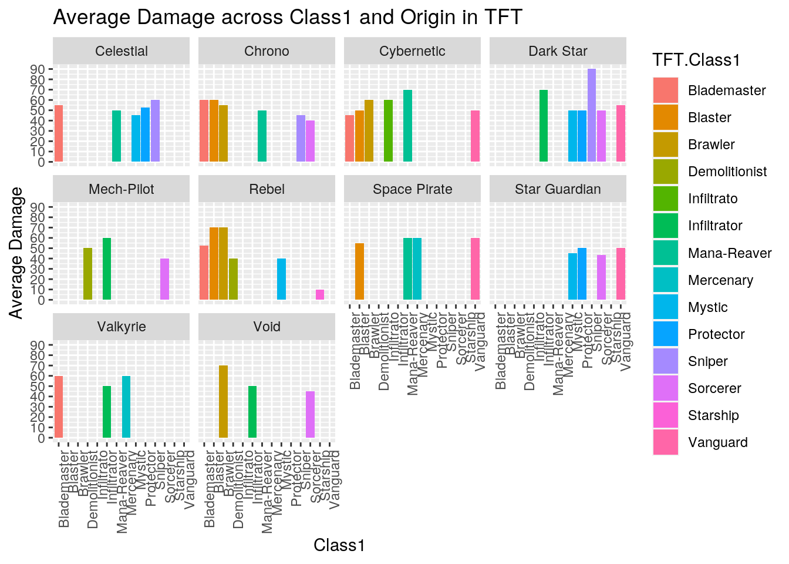
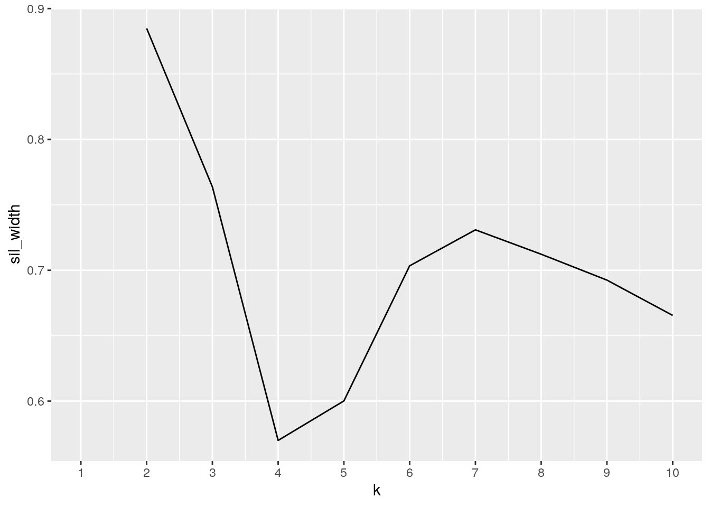
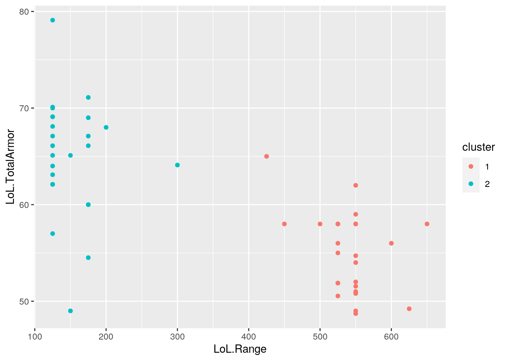
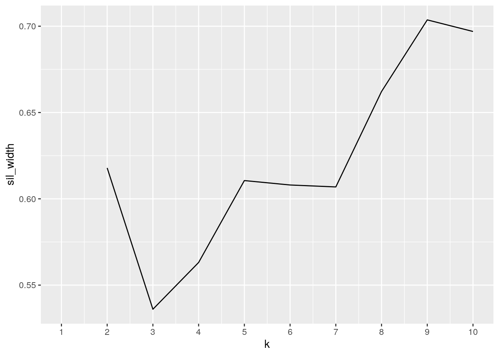
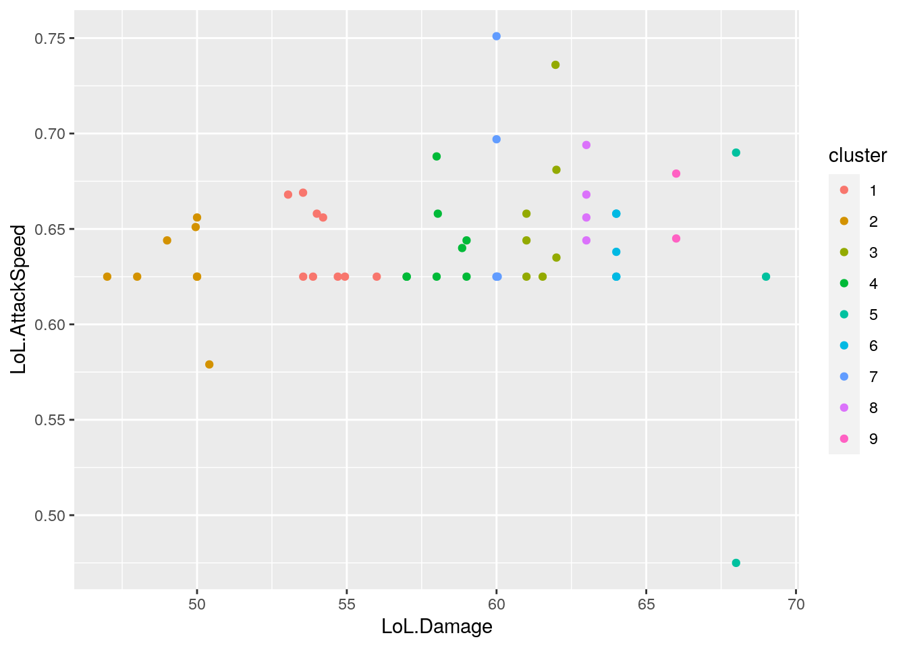
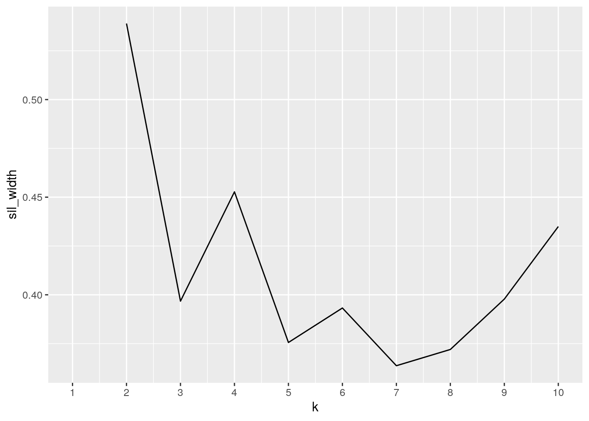
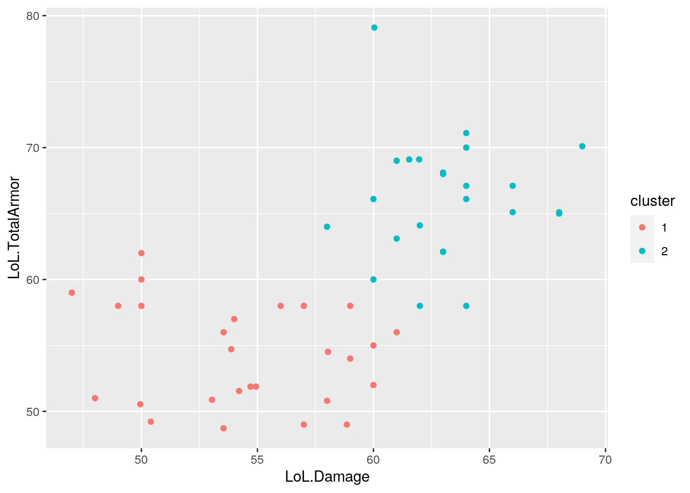

One of my favorite games is League of Legends(LoL). LoL is a team based multiplayer online battle arena game where two teams of 5 battle to see who destroys the base first. There are 5 positions corresponding to the 3 map lanes: Top, Mid, Bot(Support and Attack Damage Carry or ADC), and Jungle(they roam). LoL’s company, Riot, also has many other games that share the same universe. One example is Team Fight Tactics(TFT) which has a different play style as it is a free-for-all turn-based strategy game where players compete by making teams composed of characters and seeing which player made the best team composition. Players earn points from wins and losses and use them to “buy” new characters for their team.
Both games share the same universe and therefor the same characters or “champions”. Both datasets were found on kaggle. My first data set contains the base stats and info for the champions of the main game. There are about 148 observations and about 40 variables. The second data set has 52 observations and about 12 variables which include base stats and champion info. Naturally, though both share champions, due to the different nature of the games the stats and abilities of the champions may vary per game. I hope to see if the base stats and info from the original game may have influenced those in the spin-off game, TFT. For example, perhaps the champion in LoL with the highest base health points also has the highest in TFT. I also hope to see if stats within the game influence each other.
Both datasets have quite a few variables so I removed and narrowed down the variables to the ones I found relevant to my project purpose. This was done by creating a new dataframe and selecting only variables that I needed.
library(tidyverse)
library(dplyr)
LoL_Champions_RawData <- read.csv("LoL_Champions.csv")
LoL_Champions <- LoL_Champions_RawData %>% select(id, title,
tags, stats.hp, stats.armor, stats.spellblock, stats.attackrange,
stats.attackdamage, stats.attackspeed)TFT_Champions_RawData <- read.csv("TFT_Champions.csv")
TFT_Champions <- TFT_Champions_RawData %>% select(name, health,
defense, attack, attack_range, speed_of_attack, origin, class)For the rest of the project, variables that are game specific (i.e base Hp) have the game abbreviation in the front(i.e LoL.Hp for LoL base health and TFT.Hp for TFT). Shared traits (i.e Champion name) remain as is.
LoL_Champions <- LoL_Champions %>% select(Champion = id, Title = title,
LoL.Class = tags, LoL.Hp = stats.hp, LoL.Armor = stats.armor,
LoL.MagicArmor = stats.spellblock, LoL.Range = stats.attackrange,
LoL.Damage = stats.attackdamage, LoL.AttackSpeed = stats.attackspeed)TFT_Champions <- TFT_Champions %>% select(Champion = name, TFT.Hp = health,
TFT.TotalArmor = defense, TFT.Damage = attack, TFT.Range = attack_range,
TFT.AttackSpeed = speed_of_attack, TFT.Origin = origin, TFT.Class = class)This was done using select() to create a new data frame with the selected variables being set to the new names
In both datasets, the Class columns have cases where there are two Classes. Using tidyr functions, I tidied the datasets so that there was a new column titled second Class.
LoL_Champions <- LoL_Champions %>% separate(LoL.Class, c("LoL.Class1",
"LoL.Class2"), ",")TFT_Champions <- TFT_Champions %>% separate(TFT.Class, c("TFT.Class1",
"TFT.Class2"), ",")In order to create a second column for the second class, I separated the class column at the comma using separate() and created a second one. I did this for both datasets.
My data was already tidy for the purpose of my project. However, to practice pivoting I decided to look into two variables within the TFT dataset. In this case, I wanted to see the if, at a glance, there was any association between Hp and Origin. Origin’s purpose in TFT is that when you have more than one champion on your team from said Origin, those champions are given a buff. With that in mind, perhaps the Origin of each champ was determined using the base stats to make the buff more effective. At a glance, there does not appear to be any association between Hp and Origin. Perhaps, Origin is just that and is determined based on the lore/background of each champion. Or perhaps Origin may be based off of other stats.
TFT_Origin <- TFT_Champions %>% select(Champion, TFT.Origin,
TFT.Hp)
TFT_Origin <- TFT_Origin %>% pivot_wider(names_from = TFT.Origin,
values_from = TFT.Hp)
head(TFT_Origin)## # A tibble: 6 x 11
## Champion `Space Pirate` `Star Guardian` Celestial `Dark Star` `Mech-Pilot`
## <fct> <int> <int> <int> <int> <int>
## 1 Gangpla… 1000 NA NA NA NA
## 2 Graves 650 NA NA NA NA
## 3 Neeko NA 800 NA NA NA
## 4 Darius 750 NA NA NA NA
## 5 Rakan NA NA 600 NA NA
## 6 Lux NA NA NA 600 NA
## # … with 5 more variables: Cybernetic <int>, Rebel <int>, Valkyrie <int>,
## # Void <int>, Chrono <int>After selecting for the variables I want to look into, I pivoted the set wider with the names of each column being taken from the Origin column and the values under each being Hp.
TFT_Origin <- TFT_Origin %>% pivot_longer(2:11, names_to = "TFT.Origin",
values_to = "TFT.Hp", values_drop_na = T)
head(TFT_Origin)## # A tibble: 6 x 3
## Champion TFT.Origin TFT.Hp
## <fct> <chr> <int>
## 1 Gangplank Space Pirate 1000
## 2 Graves Space Pirate 650
## 3 Neeko Star Guardian 800
## 4 Darius Space Pirate 750
## 5 Rakan Celestial 600
## 6 Lux Dark Star 600With the dataset wide like this, there is many NA values due to each champion only having one Origin. So I pivoted the dataset longer in order to return it to its original state. Also, I used values_drop_na, so that the NA values would be dropped.
Now that each data set is edited and tidied to my liking, I joined them so that they were on one dataset. There should be 52 observations in the joined set, however, due to an error in the raw data set for LoL one of the observations was dropped. The joined dataset has 51 observations and 17 variables.
Joined_Champions <- inner_join(LoL_Champions, TFT_Champions,
by = "Champion")I joined the data using inner_join() as in my joined dataset, I wanted only the champions’ data that appear in both games. TFT is a smaller game so by joining the two I also made the joined set a smaller dataset with less observations, making it easier to work with.
In LoL, champions have two armor types, magic and regular. Instead of having two separate variables, I wanted just one column for Total Armor. Also, using the data for Attack Speed and Damage, I wanted to calculate the DPS or Damage Per Second each champion has.
Joined_Champions <- Joined_Champions %>% mutate(LoL.TotalArmor = LoL.Armor +
LoL.MagicArmor)Joined_Champions <- Joined_Champions %>% mutate(LoL.DamagePerSec = LoL.Damage *
LoL.AttackSpeed)
Joined_Champions <- Joined_Champions %>% mutate(TFT.DamagePerSec = TFT.Damage *
TFT.AttackSpeed)
Joined_Champions <- Joined_Champions %>% select(Champion, Title,
LoL.Class1, LoL.Class2, LoL.Hp, LoL.TotalArmor, LoL.Range,
LoL.Damage, LoL.AttackSpeed, LoL.DamagePerSec, TFT.Origin,
TFT.Class1, TFT.Class2, TFT.Hp, TFT.TotalArmor, TFT.Range,
TFT.Damage, TFT.AttackSpeed, TFT.DamagePerSec)In order to create these new columns. I used mutate() which took the values from preexisting columns and applied a function to them in order to create the new ones. For LoL.TotalArmor, the values of LoL.MagicArmor and LoL.Armor were added together. For the DamagePerSec for both LoL and TFT, the values in these columns were the products of Attack Speed and Damage. Finally, I used select() to edit the dataset to get rid of LoL.MagicArmor and LoL.Armor, which were no longer needed.
In LoL, the primary class of a champion is important when determining whether it suits the needs of the player. For a player who likes to be defensive and be a shield, high Hp and Total Armor is important. The champion with the highest Hp was Kayle, a fighter. The Champion with the lowest Hp was Caitlyn, a marksman. The highest Total Armor was Leona, a Tank. The lowest Total Armor was Lux, a mage.
library(kableExtra)
Joined_Champions %>% summarise(max(LoL.Hp), min(LoL.Hp), max(LoL.TotalArmor),
min(LoL.TotalArmor))## max(LoL.Hp) min(LoL.Hp) max(LoL.TotalArmor) min(LoL.TotalArmor)
## 1 600 481 79.1 48.72Joined_Champions %>% filter(LoL.Hp == max(LoL.Hp)) %>% select(Champion)## Champion
## 1 KayleJoined_Champions %>% filter(LoL.Hp == min(LoL.Hp)) %>% select(Champion)## Champion
## 1 CaitlynJoined_Champions %>% filter(LoL.TotalArmor == max(LoL.TotalArmor)) %>%
select(Champion)## Champion
## 1 LeonaJoined_Champions %>% filter(LoL.TotalArmor == min(LoL.TotalArmor)) %>%
select(Champion)## Champion
## 1 LuxJoined_Champions %>% group_by(LoL.Class1) %>% summarise(max.LoL.Hp = max(LoL.Hp)) %>%
arrange(desc(max.LoL.Hp)) %>% kbl() %>% kable_styling(bootstrap_options = "striped",
full_width = F, position = "center")| LoL.Class1 | max.LoL.Hp |
|---|---|
| Fighter | 600.00 |
| Assassin | 598.56 |
| Tank | 582.60 |
| Marksman | 581.00 |
| Mage | 575.00 |
| Support | 560.52 |
Joined_Champions %>% group_by(LoL.Class1) %>% summarize(min.LoL.Hp = min(LoL.Hp)) %>%
arrange(min.LoL.Hp) %>% kbl() %>% kable_styling(bootstrap_options = "striped",
full_width = F, position = "center")| LoL.Class1 | min.LoL.Hp |
|---|---|
| Marksman | 481.00 |
| Support | 482.36 |
| Mage | 490.00 |
| Fighter | 523.00 |
| Tank | 540.00 |
| Assassin | 570.00 |
Joined_Champions %>% group_by(LoL.Class1) %>% summarize(max.LoL.TotalArmor = max(LoL.TotalArmor)) %>%
arrange(max.LoL.TotalArmor) %>% kbl() %>% kable_styling(bootstrap_options = "striped",
full_width = F, position = "center")| LoL.Class1 | max.LoL.TotalArmor |
|---|---|
| Mage | 56.0 |
| Support | 64.1 |
| Marksman | 65.0 |
| Assassin | 68.1 |
| Fighter | 71.1 |
| Tank | 79.1 |
Joined_Champions %>% group_by(LoL.Class1) %>% summarise(min.LoL.TotalArmor = min(LoL.TotalArmor)) %>%
arrange(min.LoL.TotalArmor) %>% kbl() %>% kable_styling(bootstrap_options = "striped",
full_width = F, position = "center")| LoL.Class1 | min.LoL.TotalArmor |
|---|---|
| Mage | 48.72 |
| Assassin | 49.00 |
| Marksman | 52.00 |
| Fighter | 57.00 |
| Support | 58.00 |
| Tank | 66.10 |
In TFT, the same rules apply as those in LoL in that Class1 is important in finding Champions that suit your teams needs. The Champion with the highest Hp is Aurelian Sol, a Starship. The Champion with the lowest Hp is Fiora, a Blademaster. When it comes to Armor in TFT, there are many Champions of various Classes with the same values resulting in no one Champion of Class having the max or min.
Joined_Champions %>% summarise(max(TFT.Hp), min(TFT.Hp), max(TFT.TotalArmor),
min(TFT.TotalArmor))## max(TFT.Hp) min(TFT.Hp) max(TFT.TotalArmor) min(TFT.TotalArmor)
## 1 1100 450 40 20Joined_Champions %>% filter(TFT.Hp == max(TFT.Hp)) %>% select(Champion)## Champion
## 1 AurelionSolJoined_Champions %>% filter(TFT.Hp == min(TFT.Hp)) %>% select(Champion)## Champion
## 1 FioraJoined_Champions %>% group_by(TFT.Class1) %>% summarise(max.TFT.HP = max(TFT.Hp)) %>%
arrange(desc(max.TFT.HP)) %>% kbl() %>% kable_styling(bootstrap_options = "striped",
full_width = F, position = "center")| TFT.Class1 | max.TFT.HP |
|---|---|
| Starship | 1100 |
| Brawler | 1000 |
| Mercenary | 1000 |
| Mana-Reaver | 950 |
| Infiltrato | 850 |
| Blademaster | 800 |
| Demolitionist | 800 |
| Mystic | 800 |
| Protector | 800 |
| Sorcerer | 750 |
| Vanguard | 750 |
| Blaster | 650 |
| Infiltrator | 650 |
| Sniper | 600 |
Joined_Champions %>% group_by(TFT.Class1) %>% summarize(min.TFT.Hp = min(TFT.Hp)) %>%
arrange(min.TFT.Hp) %>% kbl() %>% kable_styling(bootstrap_options = "striped",
full_width = F, position = "center")| TFT.Class1 | min.TFT.Hp |
|---|---|
| Blademaster | 450 |
| Blaster | 500 |
| Demolitionist | 500 |
| Infiltrator | 500 |
| Sniper | 500 |
| Sorcerer | 500 |
| Mystic | 550 |
| Protector | 600 |
| Vanguard | 600 |
| Brawler | 650 |
| Mana-Reaver | 750 |
| Mercenary | 800 |
| Infiltrato | 850 |
| Starship | 1100 |
Joined_Champions %>% group_by(TFT.Class1) %>% summarize(max.TFT.TotalArmor = max(TFT.TotalArmor)) %>%
arrange(desc(max.TFT.TotalArmor)) %>% kbl() %>% kable_styling(bootstrap_options = "striped",
full_width = F, position = "center")| TFT.Class1 | max.TFT.TotalArmor |
|---|---|
| Protector | 40 |
| Sorcerer | 40 |
| Vanguard | 40 |
| Blademaster | 35 |
| Blaster | 35 |
| Brawler | 35 |
| Demolitionist | 35 |
| Mana-Reaver | 35 |
| Starship | 35 |
| Infiltrato | 30 |
| Mercenary | 30 |
| Mystic | 30 |
| Infiltrator | 25 |
| Sniper | 20 |
Joined_Champions %>% group_by(TFT.Class1) %>% summarise(min.TFT.TotalArmor = min(TFT.TotalArmor)) %>%
arrange(min.TFT.TotalArmor) %>% kbl() %>% kable_styling(bootstrap_options = "striped",
full_width = F, position = "center")| TFT.Class1 | min.TFT.TotalArmor |
|---|---|
| Blademaster | 20 |
| Blaster | 20 |
| Brawler | 20 |
| Demolitionist | 20 |
| Infiltrator | 20 |
| Mercenary | 20 |
| Mystic | 20 |
| Sniper | 20 |
| Sorcerer | 20 |
| Infiltrato | 30 |
| Mana-Reaver | 30 |
| Protector | 35 |
| Starship | 35 |
| Vanguard | 40 |
In order to find these values for both Lol and TFT, I used summarize max() and min() to find the values. To find the specific Champion I used filter to get only the observations with the specific value and selected for Champion to see who it belongs to. Finally to see the max() mins() for each class, I grouped the summary by Class1.
The map in LoL is quite large in comparison to TFT as TFT’s map is similar to a chess board with hexes instead of squares. Range in LoL is measured in an arbitrary quantity called “units”. While Range in TFT is measured by the number of hexes between Champions. For both games, there are set Ranges for the Champions in the game (there are only a select number of ranges they may have). As a result of these different map qualities, TFT is limited to only have 5 different ranges while LoL can have 13. Then, after filtering by Marksman, which is a Class I know is associated with Range, I wanted to see how the Range stats were distributed.
Joined_Champions %>% summarise(n_distinct(LoL.Range), n_distinct(TFT.Range))## n_distinct(LoL.Range) n_distinct(TFT.Range)
## 1 13 5Joined_Champions %>% filter(LoL.Class1 == "Marksman") %>% select(Champion,
LoL.Range) %>% arrange(desc(LoL.Range)) %>% kbl() %>% kable_styling(bootstrap_options = "striped",
full_width = F, position = "center")| Champion | LoL.Range |
|---|---|
| Caitlyn | 650 |
| Ashe | 600 |
| Ezreal | 550 |
| Jhin | 550 |
| MissFortune | 550 |
| Jinx | 525 |
| Kaisa | 525 |
| Xayah | 525 |
| Lucian | 500 |
| Graves | 425 |
To find these values, I first did summarize(n.distinct()) to give me the number of unique values. Then to see how the Range was distributed in LoL Marksmans, I first filtered to the desired Class1 then selected for Champion and Range.
Joined_Champions %>% summarise(quantile(LoL.Damage), quantile(TFT.Damage))## quantile(LoL.Damage) quantile(TFT.Damage)
## 1 47.000 10
## 2 54.104 45
## 3 60.000 50
## 4 63.000 60
## 5 69.000 90Joined_Champions %>% filter(TFT.Damage > 60) %>% group_by(TFT.Origin,
TFT.Class1) %>% summarize(mean.TFT.Damage = mean(TFT.Damage)) %>%
arrange(desc(mean.TFT.Damage)) %>% kbl() %>% kable_styling(bootstrap_options = "striped",
full_width = F, position = "center")| TFT.Origin | TFT.Class1 | mean.TFT.Damage |
|---|---|---|
| Dark Star | Sniper | 90 |
| Cybernetic | Mana-Reaver | 70 |
| Dark Star | Infiltrator | 70 |
| Rebel | Blaster | 70 |
| Rebel | Brawler | 70 |
| Void | Brawler | 70 |
For both Damage and DPS, I used quantile() to just see the range/distribution of these stats. For Damage, I grouped by Origin and Class1 because I wanted to see which Origin/Class1 combos were in the 75% in TFT.Damage. This was done by filtering and using the condition of being in the 75 Percentile.
Though the lowest base DPS for TFT was a lot lower than the lowest LoL DPS by about 21, the highest base DPS for TFT was higher than that of LoL by almost 35. This makes sense as TFT is a round-based game and certain Champions(considered to be stronger Champions) are not entered until later rounds.
Joined_Champions %>% summarise(quantile(LoL.DamagePerSec), quantile(TFT.DamagePerSec))## quantile(LoL.DamagePerSec) quantile(TFT.DamagePerSec)
## 1 29.18739 8.0
## 2 34.66809 31.5
## 3 37.66528 35.0
## 4 41.08000 44.5
## 5 46.92000 81.0TFT is a round based game so in the time of one LoL game many rounds take place. This is reflected in the mean Attack Speed for both games. Since TFT is a faster paced game, the average Attack Speed is higher.
Joined_Champions %>% summarise(mean(LoL.AttackSpeed), mean(TFT.AttackSpeed))## mean(LoL.AttackSpeed) mean(TFT.AttackSpeed)
## 1 0.6439804 0.7303922Joined_Champions %>% group_by(LoL.Class1) %>% summarise(mean.LoL.AttackSpeed = mean(LoL.AttackSpeed)) %>%
arrange(desc(mean.LoL.AttackSpeed)) %>% kbl() %>% kable_styling(bootstrap_options = "striped",
full_width = F, position = "center")| LoL.Class1 | mean.LoL.AttackSpeed |
|---|---|
| Assassin | 0.6711667 |
| Tank | 0.6635714 |
| Fighter | 0.6515455 |
| Mage | 0.6331667 |
| Support | 0.6308000 |
| Marksman | 0.6252000 |
Joined_Champions %>% group_by(TFT.Class1) %>% summarise(mean.TFT.AttackSpeed = mean(TFT.AttackSpeed)) %>%
arrange(desc(mean.TFT.AttackSpeed)) %>% kbl() %>% kable_styling(bootstrap_options = "striped",
full_width = F, position = "center")| TFT.Class1 | mean.TFT.AttackSpeed |
|---|---|
| Mercenary | 1.0000000 |
| Infiltrato | 0.9000000 |
| Sniper | 0.8166667 |
| Blademaster | 0.8083333 |
| Starship | 0.8000000 |
| Mana-Reaver | 0.7750000 |
| Infiltrator | 0.7625000 |
| Sorcerer | 0.7312500 |
| Mystic | 0.7125000 |
| Demolitionist | 0.7000000 |
| Blaster | 0.6750000 |
| Protector | 0.6625000 |
| Vanguard | 0.6000000 |
| Brawler | 0.5625000 |
After using mean() to find the average AttackSpeed for each game, I used group_by() to observe the average AttackSpeed for each Class which I thought might be influence each other.
The correlation heatmap helped to answer my purpose of this project, to see if the base stats of LoL influenced the base stats of TFT. It is also interesting to see correlation between the stats themselves. Looking at the heatmap, all base stats of TFT have a moderate to high positive correlation to the corresponding base stats of LoL. The highest correlation between the two games is that of the Ranges. Another interesting correlation is that for both TFT and LoL, Range and Total Armor had a strong negative correlation. It is interesting that in LoL, there is a decently high positve correlation between Damage and Total Armor but in TFT there is almost no effect.
corMatrix <- Joined_Champions %>% select_if(is.numeric) %>% cor(use = "pair")
tidycor <- corMatrix %>% as.data.frame %>% rownames_to_column("var1") %>%
pivot_longer(-1, names_to = "var2", values_to = "correlation")
tidycor %>% ggplot(aes(var1, var2, fill = correlation)) + geom_tile() +
geom_text(aes(label = round(correlation, 2)), color = "black",
size = 3) + theme(axis.text.x = element_text(angle = 90,
hjust = 1)) + scale_fill_gradient2(low = "white", mid = "light blue",
high = "blue") + ggtitle("Correlation Heatmap")
Due to the strong correlation found in the correlation heatmap. I wanted to plot the Range and Total Armor of the Champions by Class1 to see if the correlation between Range and Total Armor was apparent in the way the Champions are put into Classes for both LoL and TFT. It appears to be true as each Class seems to be in specific areas of the graph. Mages, Marksman and most Supports tend to have high range but low TotalArmor. This is consistent with the how these Classes are typically the backline of the team. Meanwhile, the frontliners(Assassin and Fighters), are low ranged and mid to high Total Armor. If you typically fight in the front, you would want more armor and vice versa.
Joined_Champions %>% ggplot(aes(LoL.Range, LoL.TotalArmor, color = LoL.Class1)) +
geom_point() + ggtitle("Range v Total Armor of Classes in LoL") +
xlab("Champion Range") + ylab("Champion Total Armor") + labs(color = "Class") #### TFT For TFT, the pattern of Range and Total Armor having a negative correlation is apparent just like in LoL as well as certain Classes having low ranges and high armor or high armor and low ranges. Although, the stats among Class1 are a bit more spread out than those in LoL. To see if the Origin, which is unique to TFT, might be the cause of this, I colored by Origin. However, there did not seem to be any pattern. The slight spread among Class may just be a choice or due to the fact that there are less options for Range in TFT.
Joined_Champions %>% ggplot(aes(TFT.Range, TFT.TotalArmor, color = TFT.Origin)) +
geom_point() + ggtitle("Range v Total Armor of Class1 in TFT") +
xlab("Champion Range") + ylab("Champion Total Armor") + labs(color = "Origin") +
facet_wrap(~TFT.Class1)
Once again, I wanted to see if I could find any patterns in how Origin may have been determined outside of just lore. This time I looked at the Average Damage for each Class1. This graph shows that some Origins have fewer Classes than others (Void and Valkyrie). In terms of Average Damage, the graph does not seem to show much. However, it is a bit difficult to tell, but it appears that the Dark Star Origin seems to have the Classes with the higher average Damage.
Joined_Champions %>% ggplot(aes(x = TFT.Class1, fill = TFT.Class1)) +
geom_bar(aes(y = TFT.Damage), stat = "summary", fun = mean) +
scale_y_continuous(breaks = seq(0, 100, 10)) + facet_wrap(~TFT.Origin,
ncol = 4) + theme(axis.text.x = element_text(angle = 90,
hjust = 1)) + ggtitle("Average Damage across Class1 and Origin in TFT") +
xlab("Class1") + ylab("Average Damage") + labs(color = "Class1")
In the interest in of seeing how different stats group together, clustering could be a good way of observation. For the following clusters, I chose to look at how the stats with a relatively high correlation group together. I did not choose to see how DPS clusters with Damage or Attack Speed as it was a function of those two. However, I did what to see how Damage and Attack Speed themselves cluster together. I also only did these for LoL as TFT has set values (multiple share the exact number), there would be clusters for each individual number rather than a group.
For Range and Total Armor, there are two clusters. These clusters are a strong structure a seen from the average silhouette width being about 0.884. These two clusters show that Champions either have a high Range and low Total Armor or low Range and high Total Armor with no in between. The champions representing these clusters are Ezreal(a Marksman) and Shen (a Tank). This actually makes a lot sense as Marksmans and Tanks are known to be opposites.
library(cluster)
pam_data <- Joined_Champions %>% select(LoL.Range, LoL.TotalArmor)
sil_width <- vector()
for (i in 2:10) {
pam_fit <- pam(pam_data, k = i)
sil_width[i] <- pam_fit$silinfo$avg.width
}
ggplot() + geom_line(aes(x = 1:10, y = sil_width)) + scale_x_continuous(name = "k",
breaks = 1:10)
library(cluster)
pam1 <- Joined_Champions %>% select(LoL.Range, LoL.TotalArmor) %>%
pam(k = 2)
pamclust = Joined_Champions %>% mutate(cluster = as.factor(pam1$clustering))
pamclust %>% ggplot(aes(LoL.Range, LoL.TotalArmor, color = cluster)) +
geom_point()
pamclust %>% group_by(cluster) %>% select(cluster, LoL.Range,
LoL.TotalArmor) %>% summarize_if(is.numeric, mean, na.rm = T) %>%
kbl() %>% kable_styling(bootstrap_options = "striped", full_width = F,
position = "center")| cluster | LoL.Range | LoL.TotalArmor |
|---|---|---|
| 1 | 541.3462 | 54.81454 |
| 2 | 151.0000 | 65.04448 |
Joined_Champions %>% slice(pam1$id.med) %>% select(Champion,
LoL.Range, LoL.TotalArmor) %>% kbl() %>% kable_styling(bootstrap_options = "striped",
full_width = F, position = "center")| Champion | LoL.Range | LoL.TotalArmor |
|---|---|---|
| Ezreal | 550 | 52.0 |
| Shen | 125 | 66.1 |
pam1$silinfo$avg.width %>% kbl() %>% kable_styling(bootstrap_options = "striped",
full_width = F, position = "center")| x |
|---|
| 0.884915 |
library(cluster)
pam_data <- Joined_Champions %>% select(LoL.Damage, LoL.AttackSpeed)
sil_width <- vector()
for (i in 2:10) {
pam_fit <- pam(pam_data, k = i)
sil_width[i] <- pam_fit$silinfo$avg.width
}
ggplot() + geom_line(aes(x = 1:10, y = sil_width)) + scale_x_continuous(name = "k",
breaks = 1:10)
library(cluster)
pam1 <- Joined_Champions %>% select(LoL.Damage, LoL.AttackSpeed) %>%
pam(k = 9)
pamclust = Joined_Champions %>% mutate(cluster = as.factor(pam1$clustering))
pamclust %>% ggplot(aes(LoL.Damage, LoL.AttackSpeed, color = cluster)) +
geom_point()
pamclust %>% group_by(cluster) %>% select(cluster, LoL.Damage,
LoL.AttackSpeed) %>% summarize_if(is.numeric, mean, na.rm = T) %>%
kbl() %>% kable_styling(bootstrap_options = "striped", full_width = F,
position = "center")| cluster | LoL.Damage | LoL.AttackSpeed |
|---|---|---|
| 1 | 54.20466 | 0.6417778 |
| 2 | 49.29550 | 0.6287500 |
| 3 | 61.50143 | 0.6577143 |
| 4 | 58.11150 | 0.6412500 |
| 5 | 68.33333 | 0.5966667 |
| 6 | 64.00000 | 0.6408000 |
| 7 | 60.00800 | 0.6646000 |
| 8 | 63.00000 | 0.6655000 |
| 9 | 66.00000 | 0.6620000 |
Joined_Champions %>% slice(pam1$id.med) %>% select(Champion,
LoL.Damage, LoL.AttackSpeed) %>% kbl() %>% kable_styling(bootstrap_options = "striped",
full_width = F, position = "center")| Champion | LoL.Damage | LoL.AttackSpeed |
|---|---|---|
| Jayce | 54.000 | 0.658 |
| TwistedFate | 49.954 | 0.651 |
| Blitzcrank | 61.540 | 0.625 |
| Fizz | 58.040 | 0.658 |
| Fiora | 68.000 | 0.690 |
| Lucian | 64.000 | 0.638 |
| Xayah | 60.000 | 0.625 |
| Irelia | 63.000 | 0.656 |
| XinZhao | 66.000 | 0.645 |
pam1$silinfo$avg.width %>% kbl() %>% kable_styling(bootstrap_options = "striped",
full_width = F, position = "center")| x |
|---|
| 0.7036615 |
Damage and Total Armor has 2 clusters. This is a relatively strong structure with an average silhouette width of 0.539. This clustering makes sense in that typically Champions are considered to have one of two roles: Damage Dealers and Damage Takers. When looking at the Champions that best represent these clusters, we have Syndra, a Mage, and JarvinIV, a Tank. This is consistent with the common knowledge in league that Mages are considered to be the best Damage Dealers while Tanks are considered the best defense as they are Damage Takers.
library(cluster)
pam_data <- Joined_Champions %>% select(LoL.Damage, LoL.TotalArmor)
sil_width <- vector()
for (i in 2:10) {
pam_fit <- pam(pam_data, k = i)
sil_width[i] <- pam_fit$silinfo$avg.width
}
ggplot() + geom_line(aes(x = 1:10, y = sil_width)) + scale_x_continuous(name = "k",
breaks = 1:10)
library(cluster)
pam1 <- Joined_Champions %>% select(LoL.Damage, LoL.TotalArmor) %>%
pam(k = 2)
pamclust = Joined_Champions %>% mutate(cluster = as.factor(pam1$clustering))
pamclust %>% ggplot(aes(LoL.Damage, LoL.TotalArmor, color = cluster)) +
geom_point()
pamclust %>% group_by(cluster) %>% select(cluster, LoL.Damage,
LoL.TotalArmor) %>% summarize_if(is.numeric, mean, na.rm = T) %>%
kbl() %>% kable_styling(bootstrap_options = "striped", full_width = F,
position = "center")| cluster | LoL.Damage | LoL.TotalArmor |
|---|---|---|
| 1 | 54.44807 | 54.24778 |
| 2 | 63.18958 | 66.10833 |
Joined_Champions %>% slice(pam1$id.med) %>% select(Champion,
LoL.Damage, LoL.TotalArmor) %>% kbl() %>% kable_styling(bootstrap_options = "striped",
full_width = F, position = "center")| Champion | LoL.Damage | LoL.TotalArmor |
|---|---|---|
| Syndra | 53.872 | 54.712 |
| JarvanIV | 64.000 | 66.100 |
pam1$silinfo$avg.width %>% kbl() %>% kable_styling(bootstrap_options = "striped",
full_width = F, position = "center")| x |
|---|
| 0.538965 |